Мебель · Светильники · Сантехника — цены на октябрь 2026
Таблица прокручивается вбок →
| № | Наименование | Производитель / артикул | Габариты / Примечание | Кол-во | Цена, ед | Контакты |
|---|---|---|---|---|---|---|
| 1 | Диван угловой Аронт Мини | Divan.by Велюр (Velvet Pink) Артикул: 24612-7-1 |
Габариты уточнить на сайте divan.by/product/divan-uglovoj-aront-mini-velvet-pink |
1 | 3831 руб. | divan.by +375 (29) 668-66-44 |
| 2 | Кресло Тилар | Divan.by Мех Молочный (Cozy Milk) |
75×80×76 см (Ш×Г×В) divan.by/product/kreslo-tilar-cozy-milk |
1 | Инд. просчёт | |
| 3 | Пуф Ньюбери | Divan.by Велюр Серый (Velvet Grey) Ножки: артикул 2716629-170-1 |
Пуф с выбором ножек divan.by/product/puf-nyuberi-velvet-grey |
1 | 241 руб. | divan.by +375 (44) 763-02-65 |
| 4 | Кровать Foster 160 | Divan.by Soft Terra |
Ширина 160 см divan.by/product/krovat-foster-160-soft-terra |
1 | Инд. просчёт | |
| 5 | Стул для рабочего стола ВАРИАНТ 1 или ВАРИАНТ 2 |
Вариант 1: Стул Айвин Divan.by Велюр Бежевый / Массив бука натуральный |
58×58×81 см Высота сиденья: 47 см divan.by/product/stul-ajvin-velvet-beige |
2 шт | 612 руб. | |
| Вариант 2: Стул Одар-3 Divan.by Мех Белый / Натуральный (Cozy White) Артикул: 253900 |
60×59×78 см (Д×Ш×В) Высота сиденья: 46 см На сайте: временно нет в наличии divan.by/product/stul-odar-3-cozy-white |
2 шт | Уточнитьвременно нет в наличии | |||
| 6 | Стул складной для кухни ВАРИАНТ 1 или ВАРИАНТ 2 |
Вариант 1: Стул складной деревянный Хоф Массив бука |
Складная конструкция Габариты уточнить на сайте ozon.by/product/stul-skladnoy-derevyannyy-hof-dlya-kuhni-788159696 |
2–4 шт | Уточнить | ozon.by |
| Вариант 2: Стул Хоф Bentwood Массив бука, венская гнутая мебель |
Классический дизайн Габариты уточнить на сайте bentwood.ru/catalog/stulya_main/stul_khof |
2–4 шт | bentwood.ru | |||
| 7 | Журнальный стол Хейко-2 | Divan.by Хейко-2 Black Артикул: 291281 |
Чёрный, современный дизайн Есть на складе и в шоуруме divan.by/product/jurnalnyj-stol-hejko-2-black |
1 | 391 руб.по промокоду НАВСЕ8без промокода 425 руб. | divan.by +375 (44) 763-02-65 |
| 8 | Механизм для выдвижного стола с ножкой | Starax S-2145-A Производитель: Starax (Турция) Импортёр: ООО «Фортэ Пласт» |
Ширина корпуса: 600 мм Цвет: антрацит forte-plast.by/mekhanizm-dlya-vidvizhnogo-stola-starax-s-2145-a |
1 | 953.10 руб. | ООО «Фортэ Пласт» 223050, Минская обл., аг. Колодищи, ул. 50 лет БССР, 29А |
| Заказные позиции мебели — изготовление под заказ | ||||||
| 9 | Консоль | Изготовление под заказ EGGER 18 мм H1334 ST9 «Дуб Сорано натуральный светлый» |
550×180×200 мм | 1 | Инд. просчёт | Darol.by |
| 10 | Рабочий стол | 1000×480×200 мм | 1 | |||
| 11 | Стеллаж | 450×350×2700 мм | 1 | |||
| 12 | Шкафчик с полкой над инсталляцией | 735×215×1500 мм | 1 | |||
| 13 | Шкаф под стиральную машину с полками | 1095×630×2700 мм | 1 | |||
| 14 | Тумба под умывальник | 1000×400×270 мм | 1 | |||
| 15 | Журнальный столик | 800×400×400 мм | 1 | |||
| 16 | Тумба под ТВ | Изготовление под заказ EGGER 18 мм H1334 ST9 «Дуб Сорано натуральный светлый» ЛДСП комплементарного цвета — референс стен NCS S1002-Y50R |
1980×350×300 мм | 1 | ||
| 17 | Кухня Г-образная с механизмом выдвижного стола | Изготовление под заказ Корпус: EGGER 18 мм H1334 ST9 Фасады: ЛДСП NCS S1002-Y50R Столешница: искусственный камень — комплементарно фартуку и полу |
Габариты — по плану мебели и развёрткам стен Механизм выдвижного стола — поз. 8 (Starax S-2145-A) |
1 | ||
| 18 | Шкаф в прихожей с полками и местом для моющего робота-пылесоса |
Изготовление под заказ ЛДСП комплементарного цвета — референс стен NCS S1002-Y50R |
1365×600×2700 мм Учесть расположение электрощитка |
1 | ||
| 19 | Вставки в нишу и полки | Изготовление под заказ Искусственный камень — комплементарно материалу плитки |
200×120×1000 мм | 1 | ||
| 20 | Прикроватная тумба, стеллаж | Изготовление под заказ ЛДСП комплементарного цвета — референс стен NCS S1000-N |
Размеры — по плану мебели и развёрткам стен |
1 | ||
| 21 | Прикроватная тумба, косметический столик | Размеры — по плану мебели и развёрткам стен |
1 | |||
| 22 | Кошачья антресоль | Размеры — по развёрткам стен | 1 | |||
| 23 | Гардеробная система: навеска, полки, выдвижные ящики, выдвижная гладильная доска, зеркальные дверцы |
Изготовление под заказ EGGER H3430 ST22 «Сосна Аланд белая» |
Размеры — по плану мебели и развёрткам стен |
1 | ||
| Зеркала — изготовление под заказ | ||||||
| 24 | Зеркало | Изготовление под заказ Рама — уточнить |
650×2540 мм | 1 | Инд. просчёт | Darol.by |
| 25 | Зеркало | Размеры — по развёрткам стен | 1 | |||
| 26 | Зеркало | Размеры — по развёрткам стен | 1 | |||
| Текстиль и ковры — подбор в салоне | ||||||
| 27 | Портьерные шторы и тюль | Подбор в салоне Цвет — по визуализациям |
Длина карниза 2760 мм Высота помещения 2700 мм |
1 | Инд. просчёт | iyadesign.by |
| 28 | Портьерные шторы и тюль | Длина карниза 4000 мм Высота помещения 2700 мм |
1 | |||
| 29 | Ковёр | Kover.by Модель и расцветка — по визуализациям |
3000×2000 мм | 1 | kover.by | |
| 30 | Ковёр | 1500×1500 мм | 1 | |||
| Тип источника света | Изображение | Фабрика | Артикул / примечание | Кол-во | Контакты |
|---|---|---|---|---|---|
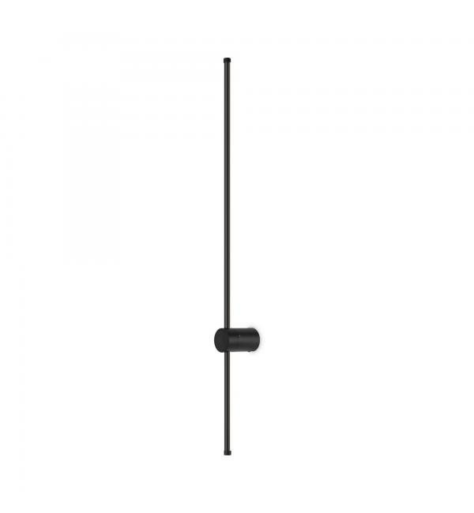 |
Бра (настенный светильник) | Freya (Германия) | Арт. FR6063WL-L20B Настенный светодиодный светильник Freya Mystery FR6063WL-L20B Высота 600 мм, ширина 60 мм, глубина 80 мм (LED 20W) Графичное дизайнерское бра черного цвета |
4 | massive.by |
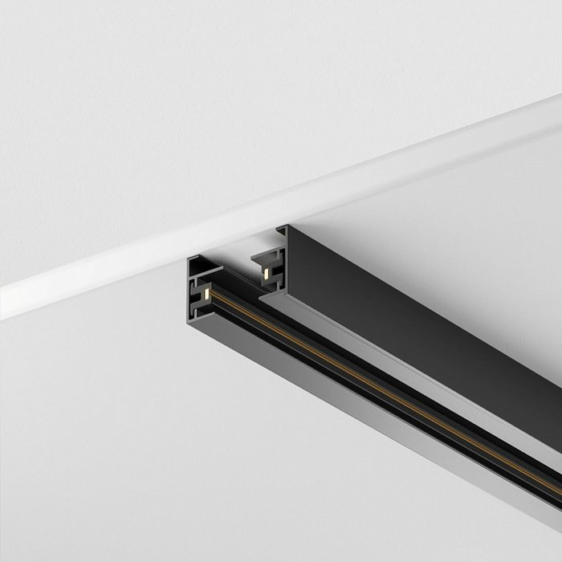 |
Вертикальный трек | Maytoni | Арт. TRX001-113B Шинопровод 3м Unity накладной/подвесной TRX001-113B (черный) Длина 3000 мм Однофазный трек 230 В; подвесные крепления не реже 1 м |
1 | maytoni.ru |
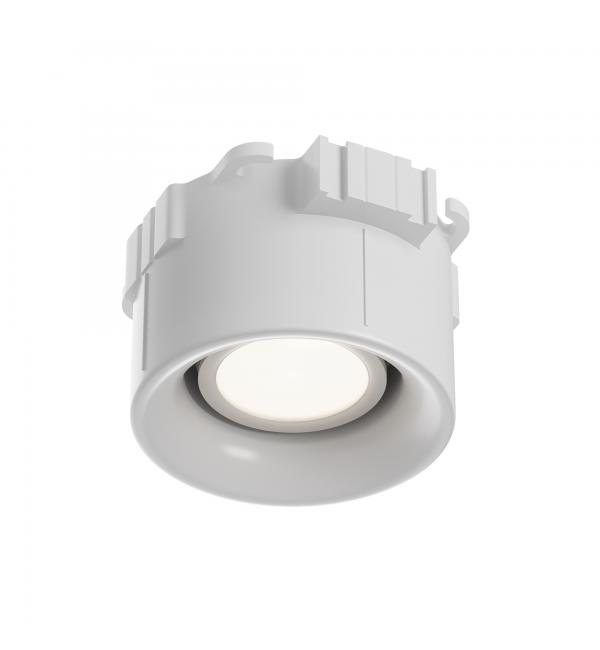 |
Встроенный точечный потолочный светильник |
Maytoni (Германия) | Арт. DL111-GU10-W Потолочный светильник Maytoni Technical Intro DL111-GU10-W Ø 60 мм, высота 100 мм Цилиндрический спот под лампу GU10 (белый) |
24 | massive.by |
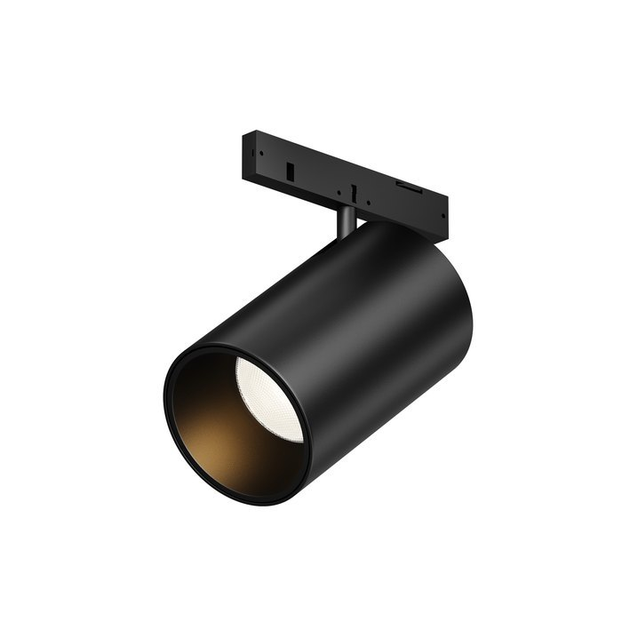 |
Встроенный трек спот | Maytoni | Арт. TR187-1-5W2.7K-M-B Трековый поворотный светильник Фокус / Focus LED Levity TR187-1-5W2.7K-M-B Ø 35 мм, 5W, 2700K теплый свет, угол 36° Магнитный акцентный спот для шины Levity |
6 | maytoni.ru |
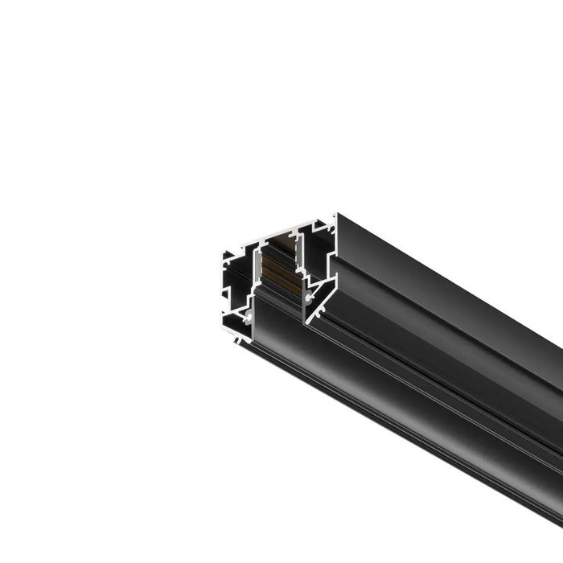 |
Потолочный трек | Maytoni | Арт. TRX034-SCH-423B Шинопровод Exility для натяжного ПВХ потолка 3м TRX034-SCH-423B Длина 3000 мм Профиль 3 метра под натяжное полотно |
1 | maytoni.ru |
нет фото |
Торшер | Уточнить | Модель — уточнить | 1 | уточнить |
| Фото | Тип | Фабрика | Артикул / примечание | Кол-во | Контакты |
|---|---|---|---|---|---|
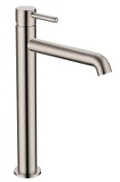 |
Смеситель для раковины ВАРИАНТ 1 или ВАРИАНТ 2 |
Grocenberg (Германия) | Арт. GB3029 никель брашированный высота 310 мм, вынос излива 185 мм цилиндрический высокий корпус под чашу Вариант 1 |
1 | santehall.by |
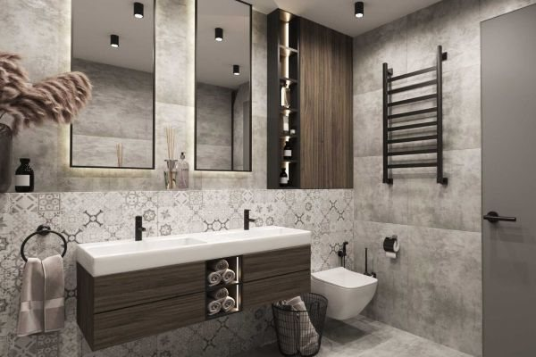 |
Арт. GB3011 никель брашированный высота 295 мм, вынос излива 175 мм геометричный дизайн ручки и корпуса Вариант 2 |
santehall.by | |||
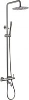 |
Душевая система ВАРИАНТ 1 или ВАРИАНТ 2 |
Grocenberg | Арт. GB7099 никель брашированный тропический душ Ø 250 мм, штанга 900–1300 мм встроенная полка и излив Вариант 1 |
1 | santehall.by |
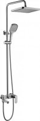 |
Арт. GB7011 никель брашированный тропический душ 250×250 мм, штанга 850–1250 мм квадратный тропический душ Вариант 2 |
santehall.by | |||
| Ванна акриловая 150×70 ВАРИАНТ 1–4 |
Roxen (Финляндия) | Арт. 240120-1570 модель Alfa 1500×700×440 мм, объём 165 л прямоугольная внутренняя чаша Вариант 1 |
1 | santehall.by | |
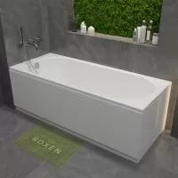 |
Арт. 240100-1570 модель Classic 1500×700×420 мм, объём 160 л анатомическая форма спинки Вариант 2 |
santehall.by | |||
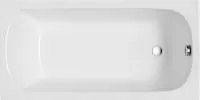 |
Polimat (Польша) | Арт. 00406 модель CLASSIC, с ножками 1500×700×400 мм, объём 145 л литьевой европейский акрил Вариант 3 |
santehall.by | ||
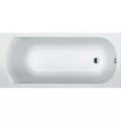 |
Riho (Чехия / Нидерланды) | Арт. B019001005 модель Miami 1500×700×430 мм, объём 155 л акрил Lucite с антибактериальным слоем Вариант 4 |
santehall.by | ||
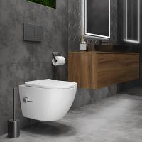 |
Унитаз подвесной ВАРИАНТ 1 или ВАРИАНТ 2 |
Roxen | Арт. 530185-01X модель Antares Bidet 535×360×355 мм форсунка биде и микролифт сиденья Вариант 1 |
1 | santehall.by |
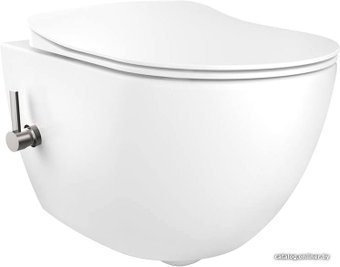 |
Creavit (Турция) | Арт. FE322-34CB00E-0002 модель Free, с сиденьем KC0903 512×355×350 мм безободковая чаша Rimless Вариант 2 |
catalog.onliner.by | ||
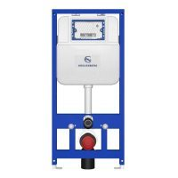 |
Инсталляция для подвесного унитаза ВАРИАНТ 1–3 |
Grocenberg | Арт. GS3050 в комплекте с крепежом 1120×500×120–180 мм монтажная рама с бачком и шумоизоляцией Вариант 1 |
1 | santehall.by |
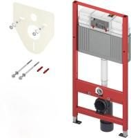 |
TECE (Германия) | Арт. 9400401 TECEprofil, с крепежом и звукоизоляцией 1120×500×150–200 мм Вариант 2 |
santehall.by | ||
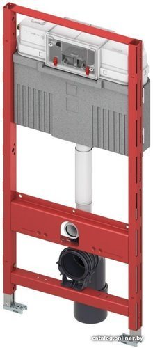 |
Арт. 9.300.302 TECEbase, комплект 4 в 1 1120×500×160 мм Вариант 3 |
catalog.onliner.by | |||
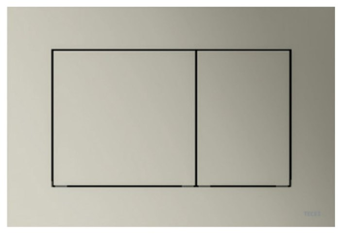 |
Кнопка смыва | Арт. 9240418 TECE now, никель матовый 220×150×5 мм сверхтонкая панель, двухрежимный смыв, в цвет смесителей |
1 | keramalux.by | |
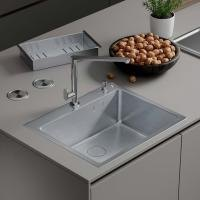 |
Мойка кухонная ВАРИАНТ 1 или ВАРИАНТ 2 |
Roxen | Арт. Simple-50-GM нержавеющая сталь, gun metal 500×450×210 мм в базу от 55–60 см Вариант 1 |
1 | santehall.by |
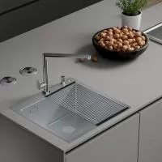 |
Арт. Simple-45-GM нержавеющая сталь, gun metal 450×450×210 мм в базу от 50 см Вариант 2 |
santehall.by | |||
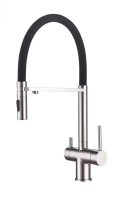 |
Смеситель кухонный под фильтр ВАРИАНТ 1 или ВАРИАНТ 2 |
Grocenberg | Арт. GB4096 на магните, никель высота 420 мм, вынос излива 220 мм гибкий шланг с магнитным держателем Вариант 1 |
1 | santehall.by |
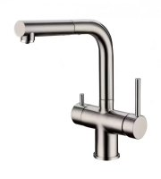 |
Арт. GB4097 с выдвижным изливом, никель высота 390 мм, вынос излива 215 мм выдвижной скрытый излив Вариант 2 |
santehall.by | |||
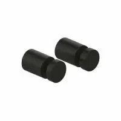 |
Крючок для полотенец | IDDIS | Арт. PET2SB1i41 Petite, чёрный / никель, латунь с PVD 70×45×40 мм двойной |
1 | santehall.by |
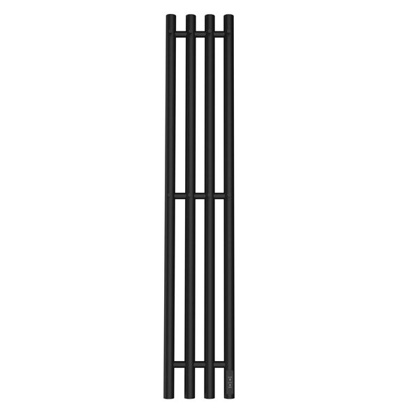 |
Полотенцесушитель электрический | REFLEXION | Арт. RXT0211018BL модель Намиб, чёрный матовый, с крючками 1100×180 мм 535,90 руб. в октябре 2026 |
1 | santehall.by |
нет фото |
Перегородка стеклянная в душевую | Изготовление под заказ | стекло, рама — антрацит 350×2000 мм крепление и фурнитуру согласовать |
1 | уточнить |
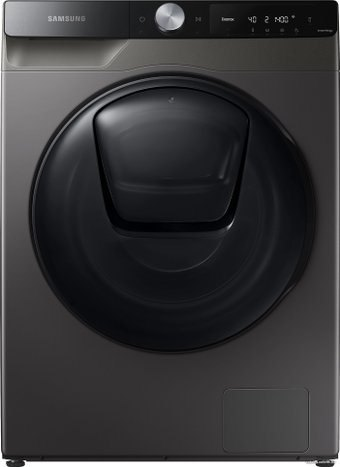 |
Стирально-сушильная машина ВАРИАНТ 1 или ВАРИАНТ 2 |
Samsung | Арт. WD10T654CBX/LP чёрный титан, AI Control 600×850×600 мм стирка 10,5 кг / сушка 6 кг Вариант 1 |
1 | catalog.onliner.by |
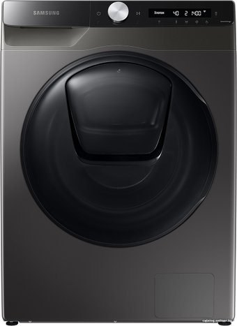 |
Арт. WD80T554CBX/LD чёрный титан, AddWash 600×850×450–520 мм стирка 8 кг / сушка 5 кг Вариант 2 |
catalog.onliner.by | |||
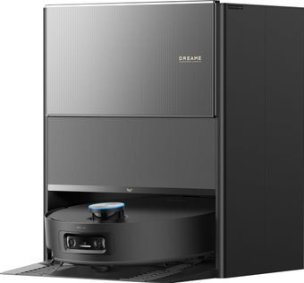 |
Робот-пылесос моющий со станцией самоочистки |
Dreame (Xiaomi Ecosystem) | Арт. Aqua10UltraRolBl Aqua 10 Ultra Roller Black база 457×340×590 мм, робот Ø 350×97 мм подключение к водопроводу |
1 | catalog.onliner.by |